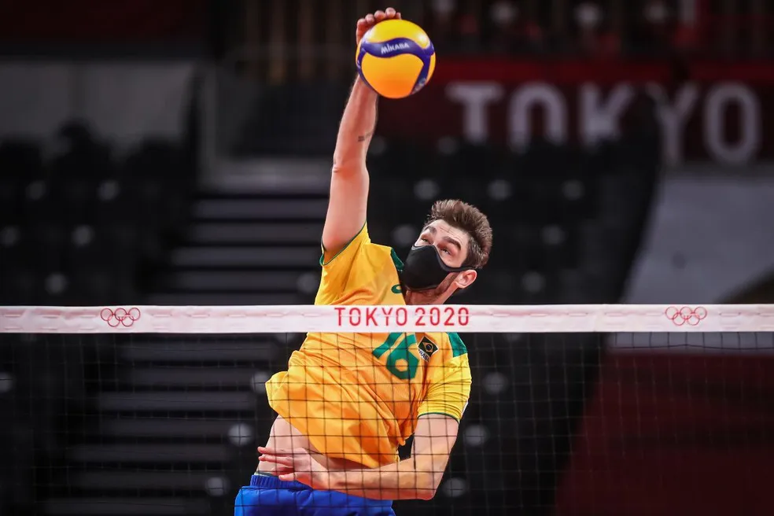

O central costuma ser um dos atletas mais altos em um time de vôlei. Ele ataca pelo meio da rede e também é um dos principais encarregados do bloqueio. Além disso, o central é o principal responsável pelas chamadas bolas rápidas, que são lançadas pelo levantador com bastante velocidade e baixa altura. Na rotação, quando estiver posicionado no fundo ded quadra, geralmente, é substituído pelo líbero.
